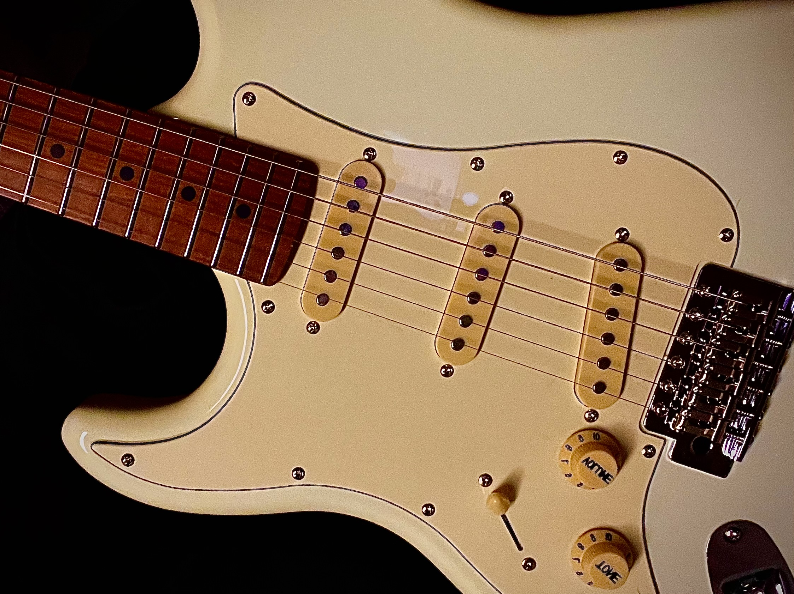
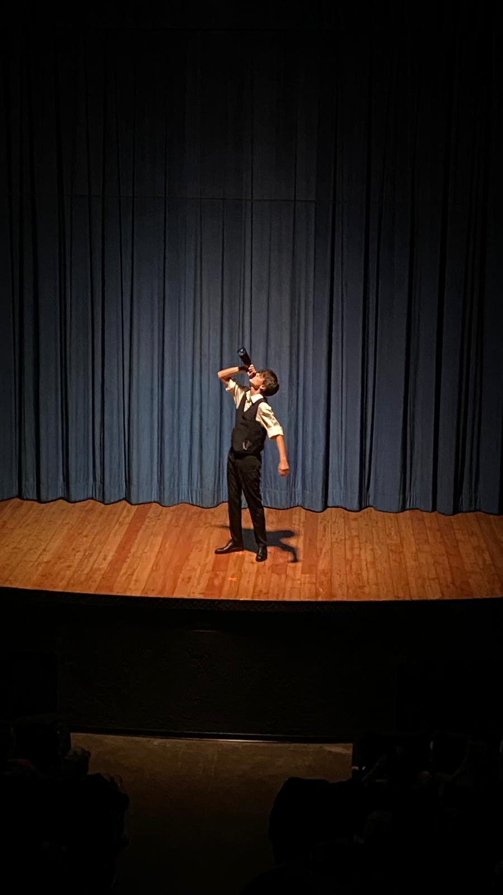

Chi sono io?
Sono un ragazzo del 2009 appassionato di informatica, musica, teatro e
videogames.
Sto studiando presso l'Istituto Salesiano Edoardo Agnelli
all'indirizzo di informatica dell'istituto tecnico.
La musica nella mia vita
Nella mia vita la musica è un pilastro portante.
Nello specifico la musica Rock mi ha portato ad iniziare a
suonare la chitarra, che ora fa parte di me, da quando avevo 15 anni.

Artigiani dell'effimero
Dal secondo anno di scuola ho iniziato il corso di teatro all'Agnelli.
Io e la compagnia siamo stati guidati dai professori del
dipartimento di lettere in un anno di sacrifici e lacrime che però hanno
portato al primo spettacolo: Cyrano de Bergerac.
Ricordo ancora gli applausi del pubblico finito lo spettacolo, le tre
entrate e la chiusura del sipario.

I videogames
Anche i videogames mi hanno segnato.
Le storie dei personaggi e della terra in cui ti immergi sono
semplicemente perfette.
L'idea di "riscrivere" un mondo in maniera che le persone possano capire
le emozioni dei personaggi è semplicemente fantastico, senza pensare poi
al fatto di dover scrivere tutto quello che fa funzionare il gioco
tramite linguaggi di programmazione.